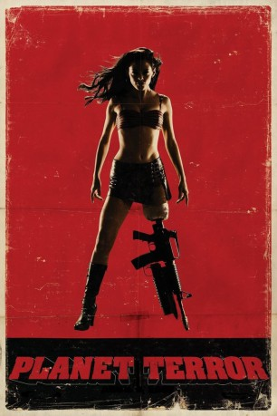
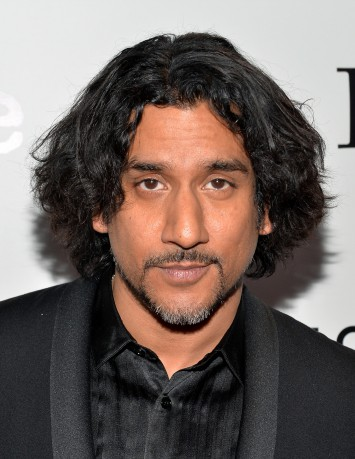

#1361 Planet Terror
 gesehen am 15.12.2015
gesehen am 15.12.2015
 
 IMDB-Wertung: 7.1 / 10
IMDB-Wertung: 7.1 / 10  Metascore: 0
Metascore: 0 
Aufgrund eines schiefgegangenen Experiments wird die Erde von Killer-Zombies, sogenannten Sickos, überrannt. Das Ärzte-Paar William und Dakota Block behandelt in dieser Nacht viele Verletzte und realisiert mit als erstes, was da vor sich geht. Unter den Patienten in dieser Nacht ist auch die Stripperin Cherry, der ein Bein ausgerissen wurde, und ihr Ex-Freund Wray. Alle haben eines gemeinsam: Sie haben nicht die Absicht sich von den Zombies verspeisen zu lassen und nehmen zusammen mit weiteren Überlebenden den Kampf gegen die Sickos auf. Cherry profitiert dabei von ihrem neuen Bein-Ersatz - einem Maschinengewehr als Prothese und Wray von seinen außergewöhnlichen Fähigkeiten als Kämpfer ...
Jahr: 2007
Dauer: 105 Minuten
FSK: 18
Land: USA Studio: Genius ProductsTonspuren: DTS - ,
Untertitel: Deutsch,
Auflösung: 1080p (1920x1080) Größe: 15872 MB
Genre: Action, Horror, Komödie
Regisseur:  Robert Rodriguez
Robert Rodriguez
Drehbuch: Robert Rodriguez
Soundtrack: Robert Rodriguez
Darsteller:
 Rose McGowan als Cherry Darling
Rose McGowan als Cherry Darling Freddy Rodríguez als Wray
Freddy Rodríguez als Wray Josh Brolin als Dr. William Block
Josh Brolin als Dr. William Block Marley Shelton als Dr. Dakota Block
Marley Shelton als Dr. Dakota Block Jeff Fahey als J.T.
Jeff Fahey als J.T. Michael Biehn als Sheriff Hague
Michael Biehn als Sheriff Hague- Rebel Rodriguez als Tony Block
 Bruce Willis als Lt. Muldoon
Bruce Willis als Lt. Muldoon-  Naveen Andrews als Abby
 Julio Oscar Mechoso als Romy
Julio Oscar Mechoso als Romy- Fergie als Tammy
 Nicky Katt als Joe
Nicky Katt als Joe Tom Savini als Deputy Tolo
Tom Savini als Deputy Tolo- Carlos Gallardo als Deputy Carlos
- Electra Avellan als Babysitter Twin #1
 Quentin Tarantino als Rapist #1 / Zombie Eating Road Kill
Quentin Tarantino als Rapist #1 / Zombie Eating Road Kill Troy Robinson als Soldier #1
Troy Robinson als Soldier #1 Jason Douglas als Lewis , credit only
Jason Douglas als Lewis , credit only Michael Parks als Earl McGraw
Michael Parks als Earl McGraw- Felix Sabates als Dr. Felix
 Danny Trejo als Machete
Danny Trejo als Machete Cheech Marin als Priest
Cheech Marin als Priest Corey Burton als Additional Narrator
Corey Burton als Additional Narrator Zoë Bell als Sicko Eating Paramedic #2 , uncredited
Zoë Bell als Sicko Eating Paramedic #2 , uncredited- Leroy Castanon als Sicko , uncredited
 Don Daro als Survivor , uncredited
Don Daro als Survivor , uncredited- Jake Garber als Gas Pump Sicko , uncredited
- Beau Harris als Soldier , uncredited
- Mark A. Hernandez als Screaming Henchman , uncredited
- Andrea Lee als Sicko , uncredited
- Malosi Leonard als Sicko Burn Victim , uncredited
- John D. Montoya als Survivor , uncredited
- Dana Reed als Sicko / Soldier , uncredited
 Emmy Robbin als Hot Female Deputy , uncredited
Emmy Robbin als Hot Female Deputy , uncredited- Robert Rodriguez als One of Abby's Henchmen , uncredited
- Christine Rose als Sicko , uncredited
- Ava Santana-Cassano als Sicko , uncredited
 Heath Young als Sicko , uncredited
Heath Young als Sicko , uncredited- Hung Nguyen als Dr. Crane
- Cecilia Conti als Paramedic Cecil
- Tommy Nix als Paramedic Nixer
- Skip Reissig als Skip
- Elise Avellan als Babysitter Twin #2
 Gregory Kelly als Rapist #2
Gregory Kelly als Rapist #2- Derek Southers als Soldier #2
- Jerili Romeo als Ramona McGraw
- Doran Ingram als Patient
- Johnny Reno als Sax Survivor
- Israel Bocanegra als Lead Henchman , uncredited
- D.J. Castillo als Sicko , uncredited
Datei: X:\FSK18-2000-2009\Planet Terror (2007, FSK18, 1920x1080).mkv seit 26.06.2015
Festplatte: FSK18
 Es gibt insgesamt 106 Filme in der Gruppe 'FSK18-2000-2009'
Es gibt insgesamt 106 Filme in der Gruppe 'FSK18-2000-2009'